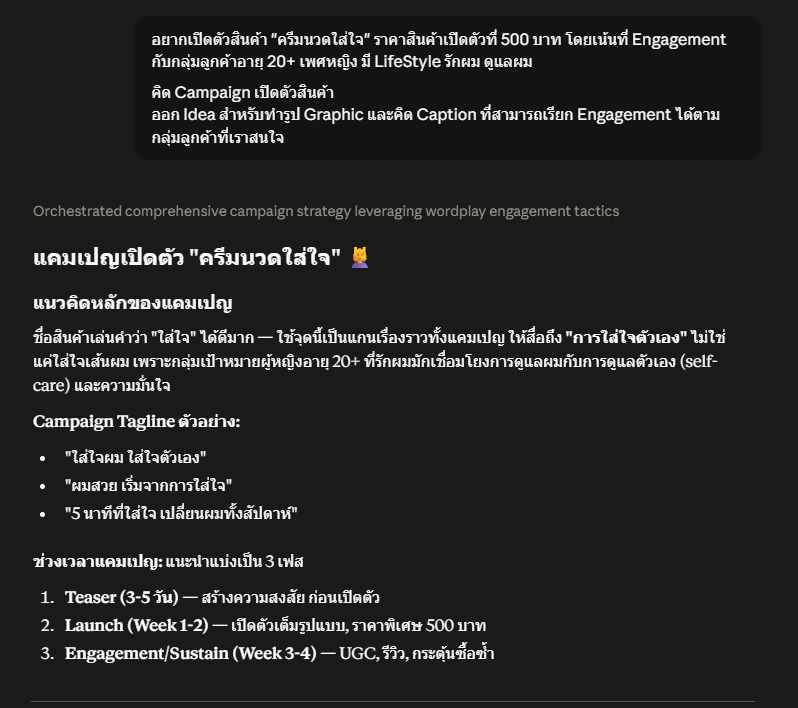
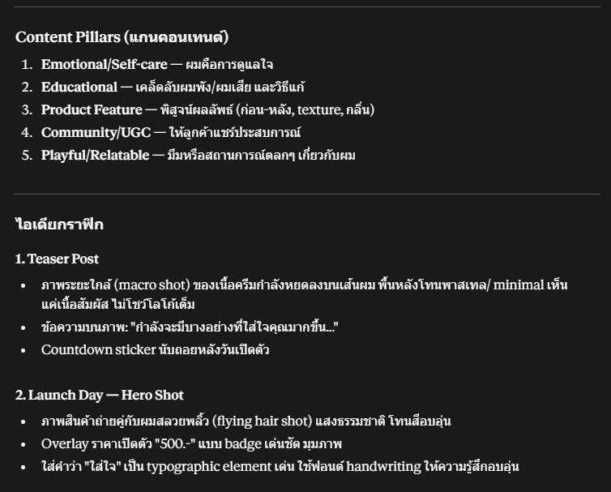
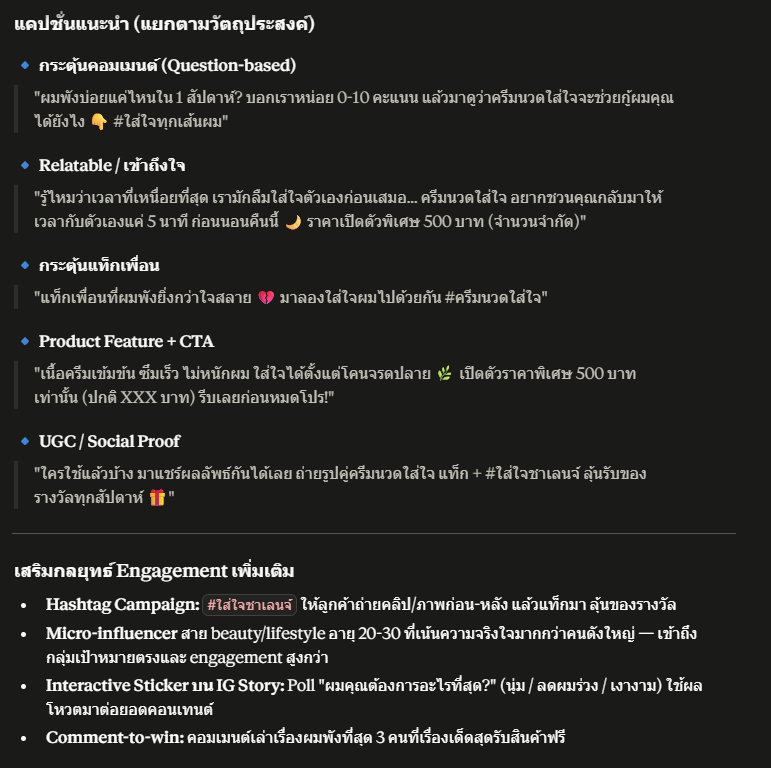
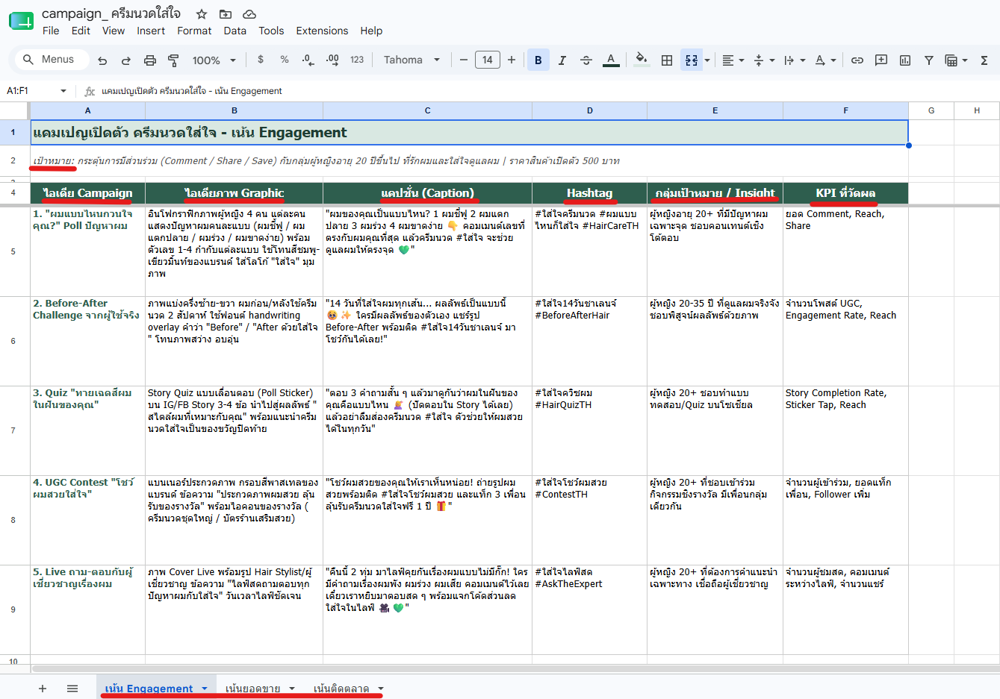
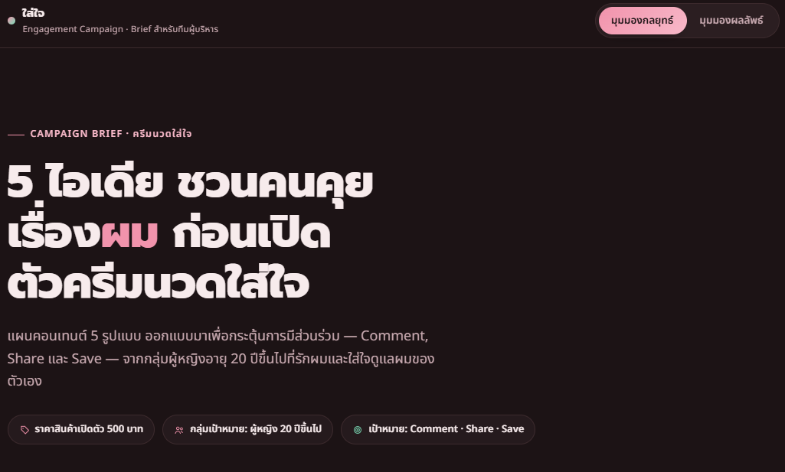
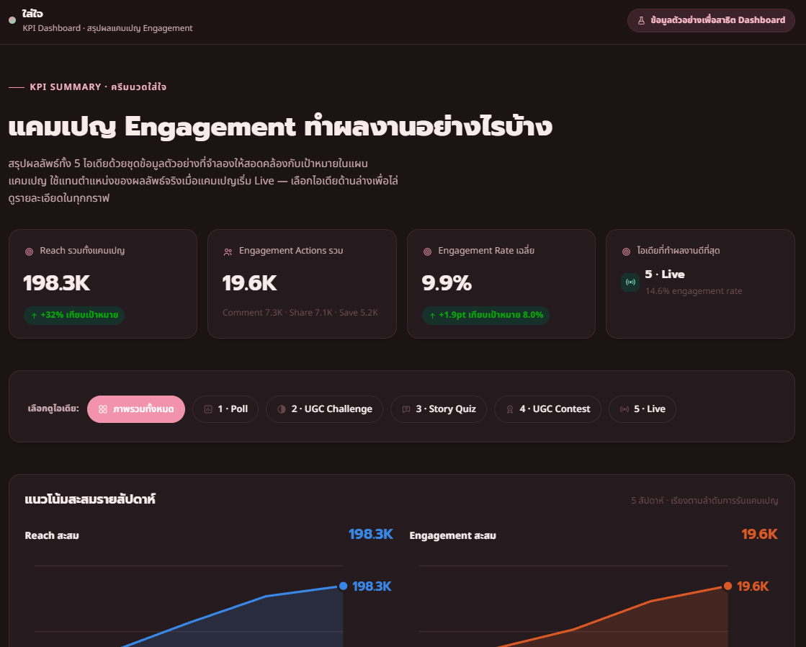

สรุปผลการทดลองใช้ Claude Chat, Claude Cowork และ Claude Code ร่วมกัน ในงานวางแผนแคมเปญการตลาด ตั้งแต่ระดมไอเดียจนถึงเว็บนำเสนอผลลัพธ์
ทดลองต่อ 3 เครื่องมือเป็นเวิร์กโฟลว์เดียว — จากไอเดียในหัวจนถึงเว็บไซต์ที่ใช้นำเสนอได้จริง
คุยกับ Claude เพื่อระดมไอเดียคอนเทนต์ที่เน้น Engagement พร้อมแคปชั่น แฮชแท็ก และกลุ่มเป้าหมายของแต่ละไอเดีย
→นำไอเดียที่ได้มาจัดโครงสร้างเป็น Google Sheet ตารางเดียว ครบทั้งไอเดียภาพ Graphic แคปชั่น Hashtag Insight และ KPI ที่วัดผล
→ป้อน Sheet เดิมให้ Claude Code เขียนเว็บ Visual-Driven สำหรับโชว์ไอเดีย และเว็บ Data Dashboard สำหรับติดตามผล KPI ของแคมเปญ
แต่ละขั้นตอนส่งต่องานให้กันเป็นทอด ๆ ทำให้ระยะเวลารวมสั้นลงมากเมื่อเทียบกับการทำมือทั้งหมด
เวิร์กโฟลว์นี้ทำซ้ำได้กับแคมเปญถัดไปทันที โดยเปลี่ยนแค่ข้อมูลนำเข้า
Reuse เวิร์กโฟลว์เดิม กับสินค้า/แคมเปญอื่น — เปลี่ยนแค่บรีฟใน Claude Chat ที่เหลือไหลตามเดิม
ต่อ Dashboard เข้าข้อมูลจริง จาก Meta/TikTok API เพื่อให้ตัวเลข Engagement อัปเดตอัตโนมัติ
ทำ Content Calendar ต่อเนื่อง ให้ทีมมาร์เก็ตติ้งใช้ Claude Cowork วางแผนคอนเทนต์รายเดือน
ขยายเป็น Template กลาง ให้ทุกทีมในองค์กรเรียกใช้ ลดเวลาทำงานจากหลักวันเหลือหลักชั่วโมง
ราคาจริงจาก Anthropic (ปี 2026) — ตัวเลขบาทเป็นค่าประมาณเพื่อให้เทียบง่าย ไม่ใช่อัตราทางการ
Claude Chat + Claude Code ในเทอร์มินัล เหมาะกับเริ่มทดลองใช้คนเดียว
โควตาใช้งานสูงขึ้น 5x–20x เหมาะกับสายงานที่ใช้หนักทุกวัน
ที่นั่งมาตรฐานเริ่ม $25 ที่นั่ง Premium ที่รวม Claude Code $150 ขั้นต่ำ 5 ที่นั่ง
Context window ใหญ่ขึ้น รองรับ Compliance และงานระดับองค์กร
อ้างอิงราคาจาก anthropic.com ผ่านแหล่งข่าวเทคโนโลยี (cloudzero.com, intuitionlabs.ai, appscribed.com) สืบค้นเดือนกรกฎาคม 2026 — ตัวเลขบาทคำนวณแบบคร่าว ๆ ที่ ~35 บาท/ดอลลาร์ ควรเช็กราคาล่าสุดที่ anthropic.com ก่อนตัดสินใจซื้อจริง
ภาพประกอบขั้นตอนระดมไอเดียแคมเปญกับ Claude Chat

ภาพที่ 1บทสนทนาระดมไอเดียแคมเปญ

ภาพที่ 2บทสนทนาระดมไอเดียแคมเปญ

ภาพที่ 3บทสนทนาระดมไอเดียแคมเปญ
ภาพประกอบ Sheet ไอเดียแคมเปญที่จัดโครงสร้างด้วย Claude Cowork

ภาพที่ 1Sheet ไอเดียแคมเปญ ครบทั้งไอเดียภาพ แคปชั่น Hashtag Insight และ KPI
ภาพประกอบเว็บนำเสนอไอเดียแคมเปญแบบ Visual ที่ Claude Code สร้างจาก Sheet เดิม

ภาพที่ 1เว็บ Visual-Driven โชว์ทุกไอเดียแบบเข้าใจง่ายในหน้าเดียว
ภาพประกอบ Data Chart Dashboard สรุปผล KPI สำหรับนำเสนอทีมบริหาร

ภาพที่ 1Data Chart Dashboard สรุปผล KPI ของแคมเปญ
แตะหรือสแกน QR เพื่อเปิดดูไฟล์งานจริงจากแต่ละขั้นตอน
ตารางไอเดียแคมเปญจาก Claude Cowork
เว็บนำเสนอไอเดียแคมเปญแบบ Visual จาก Claude Code
แดชบอร์ดสรุปผล KPI ของแคมเปญ
สรุปผล KPI สำหรับนำเสนอทีมบริหาร